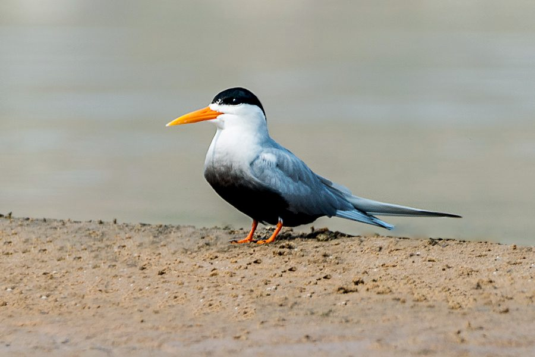

ब्लैक-बेलीड टर्नBlack-bellied Tern
Sterna acuticauda · Laridae · BRD-0161

- Scientific name वैज्ञानिक नाम
- Sterna acuticauda (Gray, 1846)
- Family कुल
- Laridae
- Hindi हिंदी
- ब्लैक-बेलीड टर्न
- Local names स्थानीय नाम
- black bellied tern, black-bellied tern, kurri, tern
- Status here यहाँ की स्थिति
- native
- Movement आवागमन
- Resident, here all year
- IUCN IUCN
- EN
- Review समीक्षा
- audited and independently read
When to look कब देखें
Present all year. साल भर मौजूद।
Largely resident on major river systems of the Indian subcontinent. Some seasonal movements in response to water levels and fish availability. All migrants and visitors →
Tell it apart from इनसे अलग पहचानें
ब्लैक-बेलीड टर्न / Black-bellied Tern
Sterna acuticauda (Gray, 1846) — Laridae
ब्लैक-बेलीड टर्न — यह छोटी सफेद चिड़िया नदी की बालू पर रहती है और मछलियाँ पकड़ती है। इसके पेट पर काली धारी होती है, जिससे पहचान आसान है। काली टोपी वाला सिर और लाल-नारंगी चोंच इसकी विशेषता है। पर अब यह बहुत दुर्लभ हो गई है। घाघरा नदी पर शायद ही दिखाई देती है।
Quick Identification त्वरित पहचान
| Feature | Description |
|---|---|
| Size | Small tern, 28–30 cm; compact, streamlined |
| Plumage | White; black cap; grey back; distinctive dark belly/vent |
| Head | Black cap extending to nape; white face and chin |
| Bill | Yellow to orange-yellow; relatively short for a tern |
| Legs | Yellow; very short |
| Belly and vent | Dark grey to blackish (diagnostic feature) |
| Tail | Forked; grey above, white below |
| Flight | Swift, direct; hovers before diving |
| Behaviour | Plunge-dives for fish; often solitary or small flocks |
Field tip: On river sandbars in eastern UP, look for a small white tern with a black cap and distinctive dark belly and vent. The short yellow bill and dark belly distinguish it from other river terns. The combination of size, dark belly, and relatively short bill are diagnostic. Often seen hunting singly or in small groups over river.
हिंदी — कैसे पहचानें:
छोटी सफेद चिड़िया।
काली टोपी और काला पेट।
पीली चोंच।
पीली टाँगें।
Morphology आकारिकी
Biometrics:
| Measurement | Range |
|---|---|
| Total length | 280–300 mm |
| Wing (flattened chord) | 210–235 mm |
| Tail | 95–110 mm (fork depth) |
| Bill | 30–38 mm |
| Tarsus | 10–12 mm |
| Weight | 90–130 g |
Plumage: Head black cap extending from crown to nape. Face white. Throat white. Back and scapulars pale grey. Wings grey (coverts and flight feathers). Rump white. Underparts mostly white, but belly (abdomen and vent area) dark grey to blackish — the distinctive field mark. Tail grey above with white below, forked.
Head: Black cap with sharp demarcation from white face. Cap sometimes shows slight white streaking, particularly in non-breeding plumage.
Bill: Yellow to orange-yellow; relatively short and straight. Dark tip possible.
Legs: Yellow; very short. Feet webbed.
Eyes: Dark; positioned for underwater vision.
Sexes: Similar; slight seasonal variation in plumage.
Juveniles: Cap duller, greyish; dark belly less pronounced. Yellow on bill duller initially.
Non-breeding birds: Black cap may become duller; some white streaking; dark belly may be less pronounced.
Vocalisations
Active vocalisers, particularly when breeding or hunting:
- Call: A sharp, loud kik-kik-kik or ki-i given in flight.
- Alarm call: A harsh, loud kree-kree when disturbed.
- Contact call: Softer chirps between flock members.
हिंदी: तेज़ आवाज़, विशेषकर उड़ते समय।
Behaviour & Ecology व्यवहार और पारिस्थितिकी
Specialist fish-eater: Feeds exclusively on small fish:
- Small cyprinids and other river fish
- Small fish juveniles
Feeding technique: Hunts by flying above water, hovering, and plunge-diving into the water to capture fish. Often hunts in shallow sections of river.
Social behaviour: Often solitary or in pairs; occasionally small flocks. Much less gregarious than River Tern. Roosts on sandbars in small numbers.
Roosting behaviour: Roosts on sandbars and shingle islands; typically solitary or in very small groups.
Habitat specialist: Strictly dependent on river systems with suitable fish stocks and sandbars for roosting and nesting. Requires relatively clear water for diving.
Breeding: Monogamous; loosely colonial or semi-colonial nester; multiple pairs may breed on the same sandbar but spaced apart.
Resident: Largely resident year-round in eastern UP; some local movements with water levels and fish availability.
Declining: Populations have declined dramatically across its range due to habitat loss and river degradation.
हिंदी: नदी में मछलियाँ खाता है। अकेले या छोटे झुंड में रहता है। बहुत दुर्लभ हो गया है।
Life Cycle / Phenology जीवन चक्र
Resident: Present year-round on suitable river systems in eastern UP; populations now very scarce.
Breeding: February to September; peak April–August. Semi-colonial; multiple pairs on sandbars but loosely spaced.
Nesting: Ground nest — a simple scrape in sand or gravel on sandbar with minimal lining.
Eggs: Typically 2–3 buff or olive eggs with dark markings; incubation approximately 21–24 days by both parents.
Chicks: Semi-precocial; fed by parents with regurgitated fish or small whole fish.
Fledging: Chicks become independent at approximately 4–5 weeks; continue being fed for several weeks after fledging.
Roosting: On sandbars in small groups or solitarily.
Water level dependency: Breeding success tied to water levels and fish availability.
हिंदी: बसंत से शरद तक प्रजनन करता है। अब बहुत कम संख्या में।
Host Plants or Prey आहार
| Food Type | Examples |
|---|---|
| Small fish | Cyprinids and other small river fish |
| Fish fry | Small fish juveniles |
हिंदी: सिर्फ छोटी मछलियाँ खाता है।
Predators / Natural Enemies शत्रु
- Large fish: May take chicks or fledglings
- Snakes: Aquatic snakes
- Monitor lizards: May predate eggs and chicks
- Crows and corvids: Depredate eggs and chicks
- Habitat loss: Primary threat; loss of sandbar habitat
- Water pollution: Pollution affecting fish stocks
- Fishing nets: Accidental entanglement
हिंदी: मछली पकड़ने के जाल में फंस सकता है। नदी के प्रदूषण से मछली की संख्या कम हो जाती है।
Agricultural / Human Relevance कृषि प्रासंगिकता
Protected species: Listed in Schedule IV of the Wildlife (Protection) Act 1972, amended 2022. All wild birds are protected.
IUCN Endangered status: Classified as Endangered (EN) by the IUCN Red List. Population decline exceeds 50% over three generations (30 years), with many populations extirpated. Primary threats are:
- Loss and degradation of river sandbar habitat
- Water management practices (dams, barrages) affecting water flow and sandbar formation
- Pollution degrading water quality and reducing fish stocks
- Fishing activities and accidental entanglement in nets
- Sand mining eliminating nesting habitat
- Human disturbance at nesting sites
- Climate change affecting river regimes
Ecosystem role: As a specialist fish-eater, the Black-bellied Tern plays a role in fish population dynamics and floodplain ecology.
Habitat conservation: The species is entirely dependent on healthy river systems with good fish stocks, minimal pollution, and suitable sandbars. Its presence indicates river quality and ecosystem health. The species' rarity makes any local sighting extremely significant for conservation.
हिंदी: यह विधि अधिनियम 1972 के अंतर्गत संरक्षित है। विश्व स्तर पर संकटग्रस्त (Endangered) है।
Expected Locally स्थानीय रूप से अपेक्षित
Not a field record. Written from published accounts for eastern Uttar Pradesh. No confirmed local sighting yet — if you have seen it, that is what the atlas needs.
अभी तक स्थानीय पुष्टि नहीं। यह विवरण प्रकाशित स्रोतों से है, किसी अवलोकन से नहीं।
The Black-bellied Tern is expected as a resident on the sandbars of the Ghaghra and Rapti rivers in Basti and Ayodhya districts, though the species is now very rare across its former range. The species should be looked for flying above the river, hovering, and plunge-diving for fish. The combination of small size, white body, black cap, distinctive dark belly and vent, short yellow bill, and yellow legs is diagnostic. Most active during daylight hours when feeding. The species' rarity and Endangered status make any sighting extremely important for conservation. A first record would be a clear photograph or detailed observation showing the distinctive dark belly and vent, with date and precise location.
हिंदी: घाघरा और राप्ती नदियों पर देखने की कोशिश करो। अब बहुत दुर्लभ है। कोई भी रिकॉर्ड महत्वपूर्ण है।
Distribution वितरण
Global range: Indian subcontinent and parts of Southeast Asia, primarily on major river systems. Formerly widespread; now fragmented range.
In India: Historically distributed on suitable river systems throughout mainland India. Now confined to a few remaining populations on major rivers.
In Uttar Pradesh: Formerly widespread on major rivers including the Ganges, Gomti, Ghaghra, and Rapti. Current distribution fragmented; populations very scarce or absent from much of the state.
In Basti district / eastern UP: Expected on the Ghaghra, Rapti, and Saryu river systems, though the species is very rare. No confirmed recent records from the district.
Research Questions शोध प्रश्न
- Is the Black-bellied Tern still present in Basti and Ayodhya districts? / क्या काली-पेट वाली कुर्री अभी भी यहाँ पाई जाती है? Document any sightings with photos, date, and precise location.
- What is the current population status and where are the remaining populations in Uttar Pradesh?
- What fish species comprise the diet, and how has fish availability changed due to pollution and water extraction?
- How is the species affected by fishing activities (nets, traps) and water pollution?
- What are the characteristics of remaining suitable nesting habitat, and what is the minimum sandbar size required?
- What conservation interventions (habitat restoration, pollution control, fishing regulation) would be most effective for recovery?
Similar Species मिलती-जुलती प्रजातियाँ
| Species | How to distinguish | हिंदी | Field Rule |
|---|---|---|---|
| River Tern (Sterna aurantia) — if sympatric | Larger (33–35 cm); white belly (not dark); orange bill | नदी कुर्री | River Tern is larger with white belly and orange bill. Black-bellied Tern is smaller with dark belly and yellow bill. |
| Common Tern (Sterna hirundo) — winter visitor | Larger (33–35 cm); red bill and legs; white belly | कॉमन टर्न | Common Tern has red bill and red legs, white belly. Black-bellied Tern has yellow bill and legs, dark belly. |
Field rule: Small white tern with black cap + distinctive dark belly and vent + short yellow bill + yellow legs = Black-bellied Tern. The dark belly is the most diagnostic feature distinguishing it from other river terns.
Taxonomy & Classification वर्गीकरण
Original description. Described by George Robert Gray in 1846. Type locality: India.
Subspecies. Monotypic — Sterna acuticauda acuticauda. No subspecies are recognised.
Family and order placement. Order Charadriiformes; family Laridae (gulls and terns). The genus Sterna contains numerous tern species; S. acuticauda is endemic to South Asia.
Phylogenetic notes. Molecular studies place Sterna acuticauda within the Asian river tern clade, distinct from other regional tern groups.
IUCN status rationale. Classified as Endangered (EN) due to:
- Extensive habitat loss and degradation of river sandbar nesting habitat
- Water management practices (dams, barrages) affecting water flow and sandbar formation
- Water pollution degrading habitat quality and reducing fish stocks
- Fishing activities, particularly nets that may entangle birds
- Sand mining eliminating nesting substrate
- Human disturbance at nesting colonies
- Climate change affecting river regimes and fish availability
Population decline exceeds 50% over three generations (30 years), with many populations extirpated.
हिंदी: भारत की मूल निवासी चिड़िया है। विश्व स्तर पर संकटग्रस्त (Endangered) है।
Photo Gallery फोटो गैलरी
No photos yet — add field photos to media/species/black_bellied_tern/ and run node scripts/sync_photos.js.
Wanted photos:
- In flight showing dark belly
- Hovering above water
- Plunge-diving
- Perched on sandbar
- Close-up showing dark belly and yellow bill
- Any sighting is important for conservation documentation
References संदर्भ
- Gray, G.R. (1846). Genera of Birds. Vol. 3, p. 656. London. [Original description]
- Ali, S. & Ripley, S.D. (1987). Handbook of the Birds of India and Pakistan. Vol. 3. Oxford University Press, New Delhi.
- Grimmett, R., Inskipp, C. & Inskipp, T. (2011). Birds of the Indian Subcontinent. 2nd ed. Christopher Helm, London.
- BirdLife International (2024). Sterna acuticauda. IUCN Red List of Threatened Species. Ver. 2024.
- Rasmussen, P.C. & Anderton, J.C. (2005). Birds of South Asia: The Ripley Guide. Smithsonian Institution, Washington DC.
- Yashmita-Ulman & Singh, M. (2025). A preliminary assessment of avifaunal diversity in Parwati Arga Bird Sanctuary, Uttar Pradesh, India. Journal of Threatened Taxa 17(11): 27976–27984.
Source file: species/fauna/birds/black_bellied_tern.md